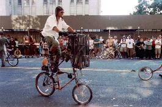
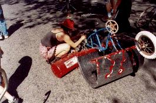
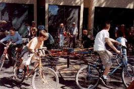
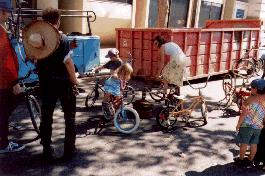
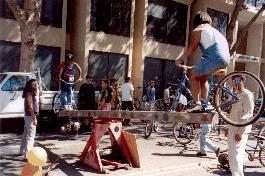
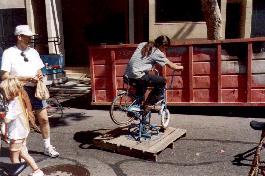
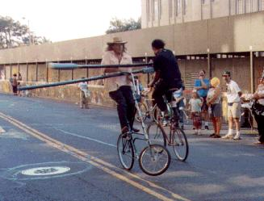
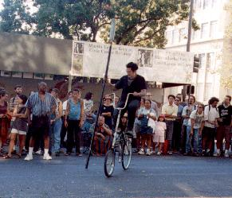

{kind=link}
{kind=link}
{kind=link}

Our envoy visited San Francisco's Bike Rodeo in the summer of 2001 when they took part in the "How Berkeley Can You Be" parade. The Rodeo is, as usual, a loosely organized chopper constructing, riding, and destructing cadre. Unlike us, however, some of them have actual metalworking skills. Our representative didn't introduce himself or anything, so he didn't ask many questions. Why not? Most of the Rodeoans weren't less friendly than the usual SF crowd, or anything. Perhaps he was afraid of having to defend our honor in the jousting ring.
 
The parade itself was somewhat annoying. Actually, parades are always fun, it was Berkeley that was annoying. There were the usual breakdowns during the ride, but luckily these people were prepared. The Cyclopath had his fully armageddon-ready mobile-home-tallbike with a tallbasket that had several tools clipped onto it. When someone had a flat, they just pulled out a tank of compressed air and filled it up until it got low again! Plush!
After the parade, carnival rides were set up for the kids to play on. There was an impressive collection of stationary cycling amusements. Most of them were extremely dangerous to ride on without parental supervision, which made them all the more fun for the kids.
 
There were two bicycle carousels, one for big kids, and one for small kids. The big kid ride ended up with two blowouts by the end of the day, which made it a little more challenging to ride, but all of the bikes kept their alignment.
 
There was also a scary bike-a-totter, which hoisted its riders seven feet in the air. Huge springs bounced them up again when they hit the bottom. The Twirl-n-hurl was mounted on a gimbal, so that turning the pedals caused the bike to rotate around a post. It drew disgusted stares from observers, since only a sick individual would elect to subject themselves to such a ride.
The most horrifying ride, however, was the human powered centrifuge. Pictures cannot do it justice. Two riders sat on the ends of a 15 foot beam, which spun around when they pushed on their pedals. This device was well constructed, thankfully, although it fell over if one rider got off before the other one did. The center post was a tractor axle with freewheels welded to it. Its top speed was limited only by the foolishness of the riders.
 
And then, of course, came the jousting, the usual two falls out of three. The winner was clear, a sullen and cadaverous gladiator on loan from the Hard Times Bike Club, a man who clearly had forgotten how to feel pain or joy or anything much other than the desire to keep the bloody side up. He first dispatched Jay, shown on the left receiving a glancing blow that succeeded in knocking him off balance. Notice that his front wheel has just left the ground and his handlebars are wrenched to the side, spelling a fall when his wheel touches down again. With that victory the zombie from Minneapolis won the right to ride the tallbike that Jay had made, crafted from twin Schwinn Varsities, the mightiest rides in the universe, and bearing the power of seven headbadges. From that point on he was unbeatable. Unbeatable? Actually, he tired out near the end, and the Cyclopath won the last round, perhaps proving the one's best ally in the joust is a few motorcycle batteries low on your bike to provide ballast.
| Copyright 2003 Megulon Five <megulon5@dclxvi.org>. |
|
This work is licensed under a Creative Commons License. | Last modified 8 August 2001. |